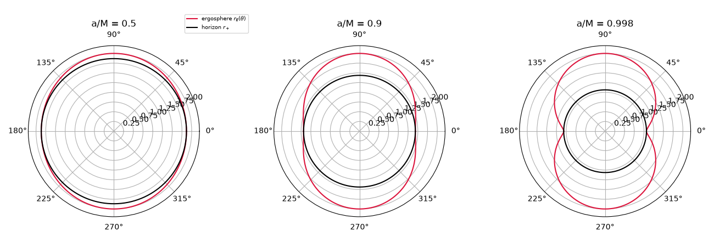
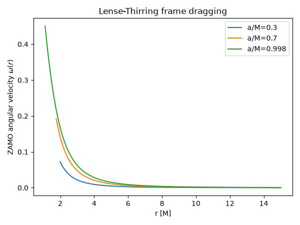
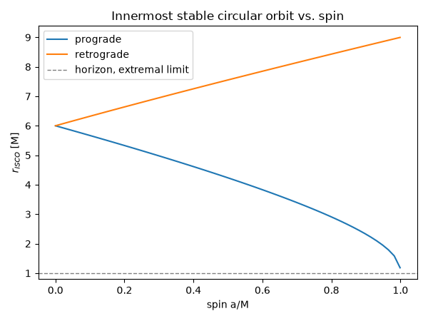
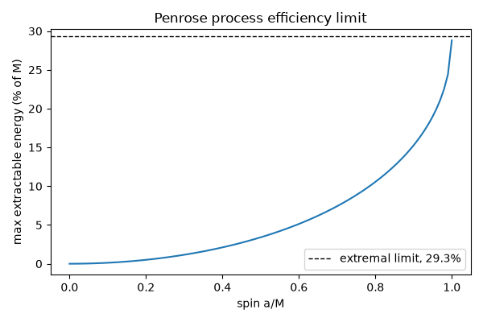

Note
Go to the end to download the full example code.
Frame dragging, the ergosphere, and the Penrose process#
A rotating (Kerr) black hole of mass \(M\) and spin parameter \(a = J/M \in [0, M)\) drags spacetime itself around with it. Outside the horizon \(r_+ = M + \sqrt{M^2-a^2}\), in the ergosphere
this dragging is so severe that no observer can stay at fixed spatial coordinates – everyone is swept around in the direction of rotation, no matter how they fire their rockets. Roger Penrose realized in 1969 that this permits something remarkable: a particle that splits inside the ergosphere can send one fragment into the black hole with negative energy (as measured by a distant observer), leaving the other fragment to escape with more energy than the original particle had – extracting the black hole’s rotational energy, up to a maximum fraction of its mass
which rises from 0 at \(a=0\) to \(1 - 1/\sqrt{2} \approx 29.3\%\) for a maximally (extremal) spinning hole.
import matplotlib.pyplot as plt
import numpy as np
from physicskit.relativity.chapters.kerr import KerrBlackHole
The ergosphere and horizons, as spin increases#
The event horizon \(r_+ = M + \sqrt{M^2-a^2}\) shrinks as spin increases, while the ergosphere \(r_E(\theta)\) (widest at the equator, where \(r_E = 2M\), and touching the horizon at the poles) bulges out further beyond it – the region between the two curves is where no observer can remain at fixed \((r,\theta,\phi)\).
theta = np.linspace(0, np.pi, 200)
fig, axes = plt.subplots(1, 3, figsize=(13, 4.5), subplot_kw={"projection": "polar"})
for ax, a in zip(axes, [0.5, 0.9, 0.998]):
bh = KerrBlackHole(M=1.0, a=a)
r_ergo = bh.ergosphere_radius(theta)
ax.plot(theta, r_ergo, color="crimson", label="ergosphere $r_E(\\theta)$")
ax.plot(theta, np.full_like(theta, bh.outer_horizon_radius), color="black", label="horizon $r_+$")
ax.plot(-theta, r_ergo, color="crimson")
ax.plot(-theta, np.full_like(theta, bh.outer_horizon_radius), color="black")
ax.set_title(f"a/M = {a}")
ax.set_ylim(0, 2.2)
axes[0].legend(loc="upper right", fontsize=7, bbox_to_anchor=(1.3, 1.2))
plt.tight_layout()

Frame dragging: the ZAMO angular velocity rises sharply near the horizon#
A zero-angular-momentum observer (ZAMO) – one who carries no orbital angular momentum of their own, yet is still swept around in \(\phi\) purely by the geometry – rotates at
which falls off as the classic Lense-Thirring rate \(2Ma/r^3\) at large \(r\), but rises sharply approaching the ergosphere.
fig, ax = plt.subplots(figsize=(6, 4.5))
r = np.linspace(1.01, 15.0, 300)
for a in [0.3, 0.7, 0.998]:
bh = KerrBlackHole(M=1.0, a=a)
r_valid = r[r > bh.outer_horizon_radius]
omega = bh.frame_dragging_angular_velocity(r_valid)
ax.plot(r_valid, omega, label=f"a/M={a}")
ax.set_xlabel("r [M]")
ax.set_ylabel(r"ZAMO angular velocity $\omega(r)$")
ax.set_title("Lense-Thirring frame dragging")
ax.legend()
plt.tight_layout()

ISCO shrinks (prograde) or grows (retrograde) with spin#
The Bardeen-Press-Teukolsky (1972) innermost stable circular orbit radius,
with \(Z_1 = 1+(1-a_*^2)^{1/3}[(1+a_*)^{1/3}+(1-a_*)^{1/3}]\), \(Z_2=\sqrt{3a_*^2+Z_1^2}\), and \(a_*=a/M\), uses the \(-\) sign for a prograde (co-rotating) orbit and \(+\) for retrograde: prograde ISCOs shrink toward the horizon as spin increases, while retrograde ISCOs grow toward \(9M\).
a_values = np.linspace(0.0, 0.999, 60)
isco_pro = [KerrBlackHole(M=1.0, a=a).isco_radius(prograde=True) for a in a_values]
isco_retro = [KerrBlackHole(M=1.0, a=a).isco_radius(prograde=False) for a in a_values]
fig, ax = plt.subplots(figsize=(6, 4.5))
ax.plot(a_values, isco_pro, label="prograde")
ax.plot(a_values, isco_retro, label="retrograde")
ax.axhline(1.0, color="k", linestyle="--", linewidth=1, alpha=0.5, label="horizon, extremal limit")
ax.set_xlabel("spin a/M")
ax.set_ylabel("$r_{ISCO}$ [M]")
ax.set_title("Innermost stable circular orbit vs. spin")
ax.legend()
plt.tight_layout()

The Penrose process: extracting rotational energy#
a_values = np.linspace(0.0, 0.9999, 100)
efficiency = [KerrBlackHole(M=1.0, a=a).max_penrose_efficiency() for a in a_values]
plt.figure(figsize=(6, 4))
plt.plot(a_values, np.array(efficiency) * 100.0)
plt.axhline(
(1.0 - 1.0 / np.sqrt(2.0)) * 100.0,
color="k",
linestyle="--",
linewidth=1,
label="extremal limit, 29.3%",
)
plt.xlabel("spin a/M")
plt.ylabel("max extractable energy (% of M)")
plt.title("Penrose process efficiency limit")
plt.legend()
plt.tight_layout()
plt.show()
bh = KerrBlackHole(M=1.0, a=0.9)
e_out = bh.penrose_energy_gain(initial_energy=1.0, fragment_energy_infalling=-0.1)
print("Particle falls in with E=1.0, splits inside the ergosphere;")
print("one fragment falls in with E=-0.1 (negative energy, only possible there);")
print(f"the escaping fragment carries away E={e_out:.3f} -- more than it started with.")

Particle falls in with E=1.0, splits inside the ergosphere;
one fragment falls in with E=-0.1 (negative energy, only possible there);
the escaping fragment carries away E=1.100 -- more than it started with.
Total running time of the script: (0 minutes 0.235 seconds)